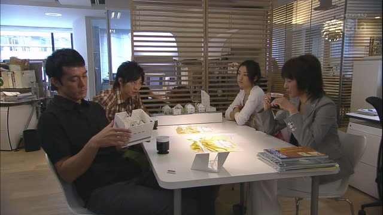
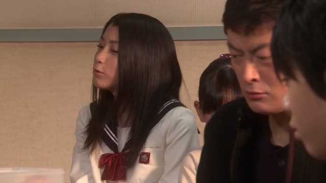
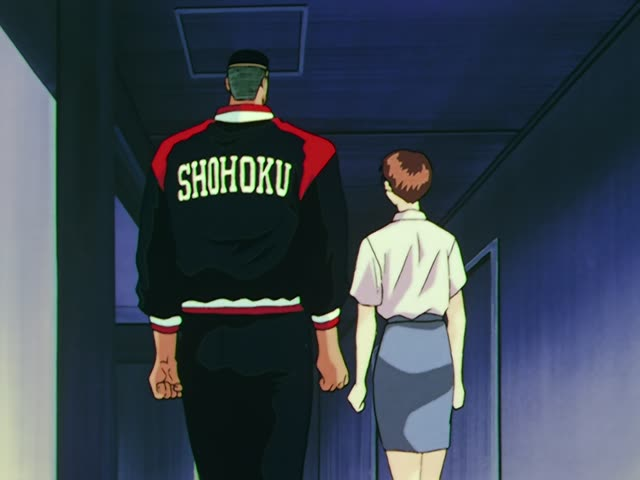
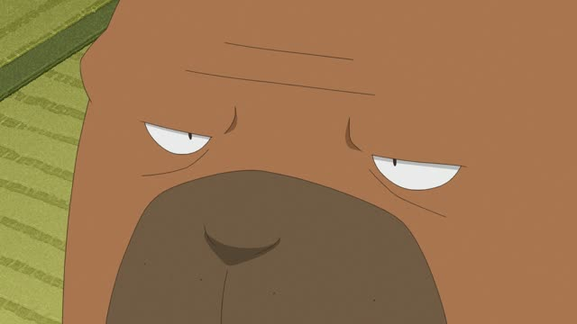
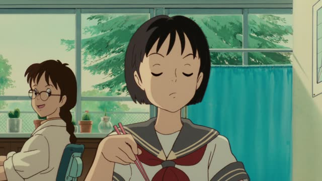

らしい
| Polite | ～らしいです |
|---|---|
| Casual | ～らしい |
Same meaning: "apparently". Only the politeness changes.
Nothing to add, not even after a noun: no だ before らしい.
| Word | Add | Ending | ||
|---|---|---|---|---|
| Noun | 学生 | – | らしい | Apparently he's a student |
| な-adjective | 静か | – | らしい | Apparently it's quiet |
| Verb | 行く | – | らしい | Apparently he's going |
| い-adjective | 高い | – | らしい | Apparently it's expensive |

Kekkon Dekinai Otoko · Episode 2
担当 女医さんらしいですよ
"Apparently your doctor is a woman." [at the hospital]
らしい means "apparently, it seems": you heard it or picked it up somewhere, and pass it on without fully standing behind it.
It goes straight after a verb, an adjective or a noun, with nothing added: 女医さんらしい. On this card, he's found out who the doctor in charge is and tells Kuwano.
There's a second らしい after a noun: "typical of, just like". 君らしい: "that's so you". The situation tells you which one.

1 Litre of Tears · Episode 11
中学校で彼女できたらしいよ
"Apparently he got a girlfriend at middle school."
On this card, the older sister spills her little brother's secret at the dinner table.
Quick Examples
You read about a new phone online.
来月新しいのが出るらしいよ。
"Apparently a new one is coming out next month."
CasualA coworker asks why the manager is out.
部長は風邪らしいです。
"It seems the manager has a cold."
After a noun: no だ.
PoliteYour friend did something very like him.
それ、田中さんらしいね。
"That's so Tanaka."
The "typical of" らしい.
CasualWith and without
山田さんは休みだ。
Yamada is off today. You know it.
山田さんは休みらしい。
Apparently Yamada is off today. You heard it.
Examples from Media
Quartet · Episode 10
電柱 蹴飛ばして 歩いてるらしいですよ
"Apparently she walks around kicking telephone poles."
Gossip: what people say about someone.

Slam Dunk · Episode 65
何か緊急のことらしいですよ
"It seems it's something urgent."
After a noun: nothing added.
Sakamoto Days · Episode 10
あっ ここに水かけると 熱くなるらしいですよ
"Oh, apparently if you pour water here, it gets hotter."
A sauna tip he picked up somewhere.
Midnight Diner: Tokyo Stories · Season 2, Episode 1
ポケットの中に入ってたらしいです
"Apparently it was in his pocket."
When Marnie Was There
本当のおばけが出るらしいよ
"They say a real ghost shows up there."
Rumors are classic らしい.
Teasing Master Takagi-san · Season 2, Episode 5
あの２人は つきあってないらしいぞ
"Apparently those two aren't going out."
After a negative.

Odd Taxi · Episode 7
近々ドブは 銀行を襲うらしい
"Apparently Dobu is going to rob a bank soon."

Whisper of the Heart
月島らしいね
"That's so like Tsukishima."
The other らしい: "typical of". After a name, "just like them".
Further Reading
Tae Kim's Guide to Japanese Grammar
Expressing similarity or hearsay · Expressing hearsay or behavior using 「～らしい」